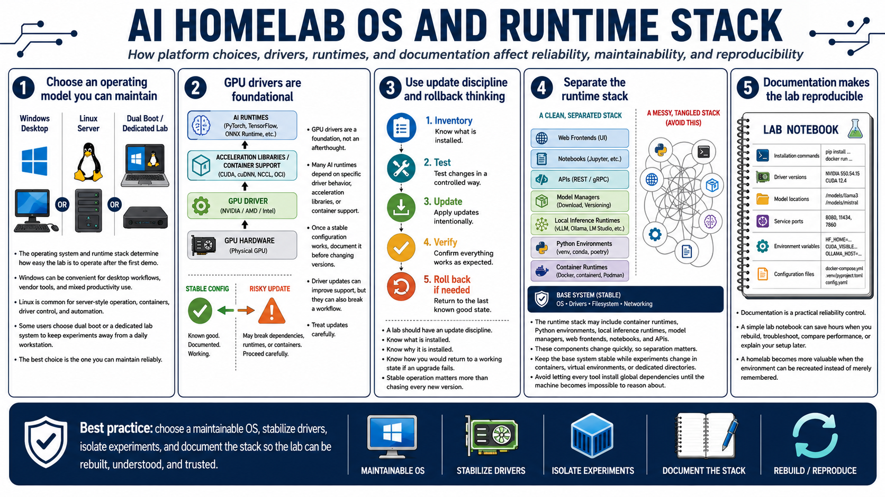

Operating Systems and Runtime Stack
Connecting to LMS... Progress: in progress

Narration
The operating system and runtime stack determine how easy the lab is to operate after the first successful demo. Windows can be convenient for desktop workflows, vendor tools, and mixed productivity use. Linux is common for server-style operation, containers, driver control, and automation. Some users choose dual boot or a dedicated lab system to keep experiments away from a daily workstation. The best choice is the one you can maintain reliably.
GPU drivers are a foundation, not an afterthought. Many AI runtimes depend on specific driver behavior, acceleration libraries, or container support. Once a stable configuration works, document it before changing versions. Driver updates can improve support, but they can also break a workflow. A lab should have an update discipline: know what is installed, why it is installed, and how you would return to a working state if an upgrade fails.
The runtime stack may include container runtimes, Python environments, local inference runtimes, model managers, web frontends, notebooks, and APIs. These components change quickly, so separation matters. Keep the base system stable while experiments change in containers, virtual environments, or dedicated directories. Avoid letting every tool install global dependencies until the machine becomes impossible to reason about.
Documentation is a practical reliability control. Record installation commands, driver versions, model locations, service ports, environment variables, and configuration files. This does not need to be formal enterprise documentation. A simple lab notebook can save hours when you rebuild, troubleshoot, compare performance, or explain your setup later. A homelab becomes more valuable when the environment can be recreated instead of merely remembered.